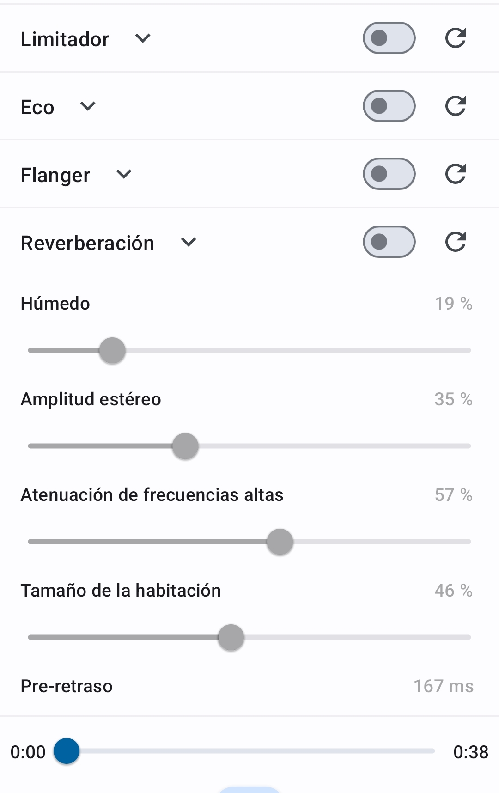

Apps y aprendizaje musical
Aplicaciones en la música moderna
Daniel Madrid Jordán
Psicología de la Música. Curso 2023-2024
21 marzo 2024
- Cambiar velocidad con mínima distorsión.
- Ajustar el tono hasta cents de semitono.
Otras posibilidades de MSC
- Separador de pistas.
- Seleccionar y recortar bucles.
- Establecer localizadores o marcadores.
- (para ensayar secciones de obras extensas)
- Grabadora.
- EQ, compresor, reverb…
Music Speed Changer (3)

Aplicación:
grabaciones caseras motivadoras para el estudiante
Otras aplicaciones conocidas
- Crear partituras sincronizadas con vídeos de YouTube.
- Ejemplo de partitura
- Separador de pistas:
- separa voz, e instrumentos:
- Voz y acompañamiento
- Voz, percusión, bajo y otros
- Útil para crear pistas de acompañamiento
Otras aplicaciones menos conocidas
Temporizador de estudio y registro de progreso.
Pantalla de progreso
Virtuosity (2)
Pantalla de práctica.
SoundCool
- Creación audiovisual colaborativa
- Hacer la creación audiovisual accesible en el aula,
usando un teléfono móvil como principal herramienta.
¿Dudas, sugerencias,
críticas, aportaciones?